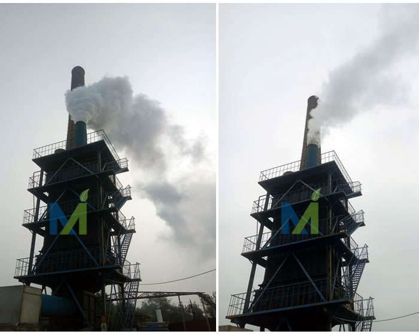

江西华邦复合材料有限公司专业从事电除雾器、湿式电除尘器及阳极管等除尘设备的研发生产
 13870005775
1387000577513870005775
邮箱：jiangxihb@163.com
目前，国内燃煤电厂锅炉尾部现有的烟气治理流程一般是有脱销、除尘、脱硫组成，烟气经湿法脱硫后直接进入烟囱。其中脱硝脱除NOX，湿式静电除尘器脱除烟尘，湿法脱硫脱除SOX。然而脱销设备工作时，在催化剂的作用下，伴有SO2转化为SO3的副反应，使烟气中SO3的含量大大增加。作为脱销还原剂注入烟气中的NH3，在实际运行中会产生部分逃逸。而湿法脱硫，通过脱硫浆液的洗涤作用可脱除烟气中的部分颗粒物；由于存在脱硫浆液雾化夹带、脱硫产物结晶析出，也会形成PM2.5。
脱硫塔对SO3的去除率很低，进入烟囱的湿烟气处于酸露点以下，其冷凝液对烟囱造成腐蚀。因为现有湿法脱硫系统去除PM2.5细颗粒物的能力很弱，对汞和SO3气溶胶等的脱除也有限，从而导致烟囱风向的下游经常出现"酸雨"、"石膏雨"等现象，或是有烟尾的"蓝烟"现象。国务院在《重点区域大气污染防治"十二五"规划》的批复意见中明确指出：到2015年，重点区域工业烟粉尘排放量下降10%；可吸入颗粒物（PM10）、细颗粒物（PM2.5）年均浓度分别下降10%、5%。其中，京津冀、长三角、珠三角等13个重点区域将PM2.5细颗粒物纳入考核指标，细颗粒物年均浓度下降6%；上述区域复合型大气污染要得到有效控制，酸雨、雾霾和光化学烟雾污染明显减少。

湿式静电除尘器在目前的烟气治理工艺流程中，湿法脱硫之后没有对脱硫工艺生产的细颗粒物进行控制，还有烟尘、PM2.5、SO3、汞及重金属等多种污染物直接从烟囱排出，处于一种自由开放状态。因此，在湿法脱硫装置之后，需要再有一道把关设备，湿式电除尘器成为终极处理的最佳选择。
湿式静电除尘器能够解决湿法脱硫带来的石膏雨、蓝烟问题，缓解下游烟道、烟囱的腐蚀，节约防腐成本。其性能稳定可靠效率高，可有效收集微细颗粒物（PM2.5粉尘、SO3酸雾、气溶胶）、重金属（Hg、As、Se、Pb、Cr）、有机污染物（多环芳烃、二恶英）等，烟尘排放可达10mg/m3甚至5mg/m3以下，实现超低排放，彻底解决烟囱排放问题，达到"一劳永逸"的效果。 在目前的烟气治理工艺流程中，湿法脱硫之后没有对脱硫工艺生产的细颗粒物进行控制，还有烟尘、PM2.5、SO3、汞及重金属等多种污染物直接从烟囱排出，处于一种自由开放状态。因此，在湿法脱硫装置之后，需要再有一道把关设备，湿式电除尘器成为终极处理的最佳选择。 由于湿式电除尘器采用水流冲洗，没有振打装置，不会产生二次扬尘。根据国外相关文献，湿式电除尘器对雾酸、有毒重金属以及PM10，尤其是PM2.5的微细粉尘有良好的脱除效果。所以，可以使用湿式电除尘器来控制电厂的SO3酸雾，同时还具有联合脱除多种污染物的功能。
湿式电除尘器具有除尘效率高、压力损失小、操作简单、能耗小、无运动部件、无二次扬尘、维护费用低、生产停工期短、可工作于烟气露点温度以下、由于结构紧凑而可与其他烟气治理设备相互结合、设计形式多样化等优点。湿式电除尘器的工作原理与干式电除尘器类似，在湿式电除尘器中，水雾使粉尘凝并，并与粉尘在电场中一起荷电，一起被收集，收集到极板上的水雾形成水膜，水膜使极板清灰，保持极板洁净。同时由于烟气温度降低及含湿度增高，粉尘比电阻大幅度下降，因此湿式电除尘器的工作状态非常稳定。
在电除雾器的运行过程中，绝缘瓷瓶的破坏、龟裂是经常发生的，这会招致不能外加高电压或不能送电。那造成这种情况的原因是什么呢？
1.冷凝漏电：由于收尘室在运转中温度降低，SOs在表面上冷凝，往往发生漏电，所以必须在适当的温度下(出口300℃)运转。
2.安装作业中的破坏：安装作业要谨慎，必须注意不要碰撞或安装不合适。

电除雾器绝缘瓷瓶
一. 现象：闪络过于频繁，收尘效率降低。
原因：
(1)电除雾器电场以外放电，如隔离开关、高压电缆及阻尼电阻等放电。
(2)电控柜火花率没调整好。
(3)工况变化，烟气条件波动很大。
(4)级丝与极板距离调整不当。
处理：
(1)处理放电部位。
(2)调整火花率电位器及置自动状态。
(3)通知值长，调整工艺状况，改善烟气条件。
(4)调整级丝与极板距离。
二、现象：一次电压、二次电压偏低；二次电流偏小。一次电流偏大很多，上升快，与二次电流上升不成比例。
原因：整流变压器有匝间短路或硅堆有存在开路或击穿短路。
处理：做开路试验，一次侧有电流出现，即变压器内部有器件损坏，偏励磁产生或短路。需吊芯维修，更换损坏器件。
2. 现象：一、二次电压低，二次电流小，一次电流非常大，上升时一、二次电流不成比例，一次电流猛增与突变，可能爆快熔，变压器有明显的异常声音。
原因：
(1)整流变压器低压包短路故障；
(2)整流变压器铁芯(包括穿芯螺栓)绝缘损伤，涡流严重。
处理：
(1)更换低压包；
(2)重新做好铁芯绝缘。
三、现象：一、二次电流达到额定值时，一次电压在280～330V，二次电压在40～50kV，无闪络。
原因：高压电缆与终端头严重泄漏。
处理：重做高压电缆与终端头。
四、 现象：供碱泵变频变化频繁，转速变化大，循环水箱PH数值变化大。
原因：循环水中和管异物堵塞。
处理：清理电除雾器阳极管内异物。
五、 现象：循环水量逐渐下降，效率除尘逐渐下降。
原因：电除雾器管道与循环水泵结垢。
处理：适当降低循环水箱PH值至5.2运行。

威美氰尿酸行业电除雾器运行前后对比
作为生物质锅炉的一种，蔗渣锅炉的使用有几十年的历史，但国内从２００５年起才大规模进行各种生物质发电锅炉工程。相对燃煤锅炉来说，生物质锅炉烟气处理的系统研究相对较少。蔗渣锅炉部分的或有时候会掺烧煤，其除尘工艺也主要参考燃煤锅炉。相对来说，蔗渣锅炉烟气含尘浓度低（２０００～５０００ｍｇ／ｍ３），ＳＯＸ含量很低，ＮＯＸ含量不高。新标准《火电厂大气污染物排放标准》（ＧＢ１３２２３－２０１１）的实施，要求６５ｔ／ｈ以上的生物质发电锅炉烟尘排放浓度限值≤３０ｍｇ／ｍ３，原来使用的麻石水膜除尘器等湿式除尘工艺即使自身再优化提效，也不能满足排放标准，必须使用除尘效率极高的除尘系统或多级除尘系统。
制糖厂锅炉烟气除尘现状全国食糖年均消费量约１４００万吨，制糖工业在国民经济中占有重要地位。
全国每年糖料入榨量约１００００万吨，而甘蔗入榨量、制糖量均占９０％以上。占全国６０％产量的广西甘蔗制糖业有１００多家糖厂，既是广西主要支柱产业之一，也是广西大气环境主要污染源之一。甘蔗制糖厂锅炉燃料一般采用制糖产生的甘蔗渣，属于生物质锅炉的一种。
甘蔗渣是一种含水份高、挥发分大、发热值低、含氮量不高与含硫量低的生物燃料。一般多采用链条炉排锅炉，甘蔗渣的燃烧机理是既有悬浮燃烧又有层燃，供风量大，故烟气产生量也大，烟气含氧量高、湿度大。
蔗渣锅炉的使用有几十年的历史，但针对其烟气的处理仅有２０多年历史。原来北方烧煤锅炉流行采用麻石水膜除尘器，九十年代进入广西糖业后得到广泛的应用并不断优化。
这种采用麻石制作的"立式／卧式文丘里＋旋风水膜／旋流板除尘器"为主的湿式除尘工艺，具有投资及维修成本低、管理简单方便的特点，大部分能满足烟尘排放浓度≤２００ｍｇ／ｍ３的旧环保标准。标准要求不高，故一般没有用到袋式除尘器、电除尘器等投资较大的除尘工艺系统。
随着环保标准的不断提高，烟尘排放浓度控制越来越严，小于１００、８０ｍｇ／ｍ３的要求对麻石水膜除尘器来说已经勉为其难。同时广西糖业按节能减排要求，逐步淘汰小于５０ｔ／ｈ锅炉，而全面实施《火电厂大气污染物排放标准》与《锅炉大气污染物排放标准》的新标准，要求烟尘排放浓度≤３０或８０ｍｇ／ｍ３，提标改造势在必行。
2提标改造可选工艺
作为生物质锅炉的一种，蔗渣锅炉的使用有几十年的历史，但国内从２００５年起才大规模进行各种生物质发电锅炉工程。相对燃煤锅炉来说，生物质锅炉烟气处理的系统研究相对较少。蔗渣锅炉部分的或有时候会掺烧煤，其除尘工艺也主要参考燃煤锅炉。相对来说，蔗渣锅炉烟气含尘浓度低（２０００～５０００ｍｇ／ｍ３），ＳＯＸ含量很低，ＮＯＸ含量不高。新标准《火电厂大气污染物排放标准》（ＧＢ１３２２３－２０１１）的实施，要求６５ｔ／ｈ以上的生物质发电锅炉烟尘排放浓度限值≤３０ｍｇ／ｍ３，原来使用的麻石水膜除尘器等湿式除尘工艺即使自身再优化提效，也不能满足排放标准，必须使用除尘效率极高的除尘系统或多级除尘系统。
若烟尘排放浓度限值≤１００、８０或５０ｍｇ／ｍ３，火力发电厂燃煤锅炉广泛采用的电除尘器，或许用于蔗渣锅炉烟气除尘。但对于≤３０ｍｇ／ｍ３限值，传统电除尘器即使五电场也难以保证长期稳定达标。火力发电厂也在改造其除尘工艺，一个路径是增加电场，采用旋转移动电极、高压高频电源与低低温电除尘等优化工艺，另一个路径是改造为布袋除尘器或电袋复合除尘器，再一个路径是在脱硫塔后端增加湿式电除尘工艺。
从工程案例来看，三个路径都不乏成功的案例，但运行中也暴露出它们各自的缺陷。从高效除尘工艺实际工程应用来看，袋式除尘器对微细颗粒物有很高的捕集率，除尘效率甚至高达９９．９９％以上，排放的粉尘浓度可控制在１０ｍｇ／ｍ３以下。由于除尘效率高，并随着滤料、清灰系统、自控水平的改进，近年来袋式除尘器在国内３０多个工业行业，尤其在钢铁（９５％）、水泥（９０％）、化工、电力（３０％）等高污染行业，得到了广泛的应用，特别是近年来上马的垃圾焚烧项目，应用比例达１００％。
江西华邦复合材料有限公司设计生产的湿式静电除尘(雾)器，其工作原理为：烟气通过直流电高压电场，高压电晕放电使烟气中的烟尘和雾滴荷电，荷电颗粒在电场力作用下向相反电荷的电极运动，到达电极后进行放电形成中性尘、雾颗粒，不断沉积、凝集于电极上，从而实现蔗渣（生物质）锅炉企业实现达标排放，以下是我司项目云南糖厂甘蔗渣（生物质）锅炉湿式静电除雾器运行效果：

云南糖厂甘蔗渣（生物质）锅炉电除雾器运行效果
摘 要：通过对电除尘电场在冷态带电场升压和正常运行中出现的火花放电或频繁闪络进行原因分析，逐项排除产生火花的可能部位，同时根据电除尘实际运行工况及电场运行参数变化判断出可能产生的原因，提出电除尘电场产生火花放电的设备优化、改进、定期检查及重点注意事项等解决办法和预防措施，降低电除尘电场出现火花放电的概率，确保电除尘长时间可靠、稳定、高效的运行。
关键词：电除尘； 火花； 绝缘子； 阳极板； 芒刺线； 阻尼电阻；
前言：随着火电厂烟气超低排放改造的不断深入，烟气排放小时均值在线数据要求越来越严格，这就要求环保设施必须处于百分百可靠运行状态，所以电除尘电场的运行稳定性对于粉尘超低排放至关重要。而电除尘电场产生火花放电时严重困扰了电场稳定的运行，甚至出现电场退备，导致电除尘除尘效率降低。因此，必须对电除尘电场在冷态带电场升压和正常运行中出现的火花放电或频繁闪络进行原因分析，逐项排除产生火花的可能部位，同时根据电除尘实际运行工况及电场运行参数变化判断出可能产生的原因，提出电除尘电场产生火花放电的设备优化、改进、定期检查及重点注意事项等解决办法，降低电除尘电场出现火花放电的概率，确保电除尘长时间可靠、稳定、高效的运行。
1 火花放电的原理及现象
电除尘器是利用直流负高压使气体电离、产生电晕放电，进而使粉尘荷电，并在强电场力的作用下，将粉尘从气体中分离出来的除尘装置，直流负高压通过高压隔离开关柜接入阴极系统，阴极系统依靠吊挂装置悬挂在阳极板中间，吊挂装置与支撑钢梁间采用瓷瓶、绝缘板进行绝缘。阴极振打固定在阴极框架上，也带有高压直流负电，与外部传动装置依靠、瓷轴、绝缘板进行绝缘。阳极直接悬挂在与除尘器本体相连的沉淀梁上，与除尘器壳体一起可靠接地。而火花放电不同于电晕放电，在电场投运的过程中，当高压引入投入高压直流电达到某一个电压分界点，电除尘阴极就会瞬间发生火花，阴阳极间距击穿，并伴有巨响的放电声音及火花四溅，严重的话相当于阴阳极接通，造成阳极板烧穿。从电除尘上位机控制画面可以看到，二次电压和二次电流瞬间下降，就地表计频繁摆动，火化率显示数字，一般的火花放电会将电压电流参数限制在一定的范围内，如果严重的话直接引起电场退备。
2 火花产生的原因分析
2.1 烟气和粉尘特性方面的因数
电除尘是根据燃烧煤种及锅炉运行工况进行设计安装的，规定了其适用的煤种(包括含硫量、水分、灰分等)、锅炉排烟温度、烟气量、湿度、粉尘含量及粉尘特性等，当锅炉燃烧煤种发生变化及锅炉实际运行工况偏离设计参数较大时，将会出现电除尘运行的不适应，容易出现电场火花放电的情况。烟气性质主要取决于燃煤的成分，也和锅炉燃烧方式、制粉系统型式及其运行操作条件有关。粉尘的性质主要取决于粉尘的化学成分、物相结构、理化特性和粉尘浓度、比电阻、粒径分布及形状、大小、密度、粘附力等。燃烧后排出的烟气中都含有一定的水分，这对电除尘器的运行是有利的。一般烟气中水分多，除尘效率就高。如果烟气中水分过大，虽然对电除尘器的性能不会有不利影响，大量水蒸气随着粉尘的荷电沉积在收尘极板上，由于含水量大粉尘粘附性发生变化，变得越来越不易振打清理掉，使积灰越来越厚，异极距变小，产生火花放电，灰层发生局部电离，严重影响电场正常运行。
2.2 电除尘本体方面的因数
(1) 极板、极线变形间距变小，发生放电：在运行中，当灰斗满灰不能及时排掉，出现阳极板膨胀受阻，极板局部弯曲，异极距变小；当阳极板振打杆受阻时，在振打的过程中，阳极板下夹板发生弯曲导致阳极板排整体弯曲，异极距变小；阳极板排的连接卡槽损坏，相邻的阳极板彼此不成整体，由于阳极板较长较薄，刚性不足，容易发生弯曲，异极距变小；阴极线膨胀距离受阻，极线变形，异极距变小；阴极线线体刚性不足发生局部弯曲变形，异极距变小；阴极芒刺线刺尖大量弯折，放电间距变小；阴极螺旋线紧力下降，发生松弛摆动，局部间隙变小。
(2) 阴极小框架局部变形或移位，发生放电：在运行中，由于阴极小框架承受阴极振打的振打力，阴极振打长时间运行，出现小框架局部变形，阳极板与阴极框架间距变小；阴极小框架连接杆局部开焊或断裂，造成框架与极板间距变小：个别阴极吊挂杆下沉，导致阴极框架整体向某一个方向偏移，整体异极距变小。
(3) 阳极板限位损坏或太低，极板排出槽，在运行中阳极板振打杆长时间受振打系统的振打力，且往复的做活塞运动，两侧的限位板长时间接触磨损掉或开焊掉落，极板排下部向两侧摆动，有时会与阴极系统接触发生直接短路；当灰斗发生满灰时，积灰到达极板排，极板排膨胀受阻，随着积灰越来越多，极板排会被积灰顶出槽，出现火花放电或直接短路。
2.3 供电及控制部分方面的因数
(1) 绝缘子损坏或积灰严重，发生爬电放电：绝缘瓷套和瓷轴用来支承和绝缘放电系统，运行中，瓷套表面往往会沉积一层灰尘和污物，绝缘水平降低，在高电压作用下，发生"爬电"现象，并击穿放电。长期的放电又造成防尘板面碳化，以致电场电压频繁闪络，不能在高电压运行；绝缘瓷套和绝缘瓷轴长时间运行，同时由于是承压件会出现裂纹或是截止断裂，绝缘性能降到最低，电场放电严重。
(2) 绝缘子加热器不加热及漏风结露，导致放电：这种情况一般发生在电场检修后，天气温度较低，绝缘子加热器损坏不加热或不加热，绝缘子温度低，绝缘部件表面水气凝结，绝缘严重下降，发生放电；当人孔门、电加热器及温度测量装置等安装处漏风严重，可造成雨水直接侵入绝缘子室，高压绝缘子及阴极振打瓷轴表面受水汽污染发生爬电；绝缘子室温度在烟气温度低时主要靠电加热、热风加热保持，在烟气温度上来后则主要靠烟气所携热量保持。绝缘子室的大小对温度的升高及保持影响很大。
(3) 阻尼电阻故障；当阻尼电阻丝发生局部断裂或有裂纹时，投入电场会发生剧烈放电；阻尼电阻失效或紧力下降发生松弛，投运电场会发生放电。
3 电场发生火花的解决方法
3.1 严格控制烟气和粉尘特性
为了消除因煤种发生变化而影响电除尘器的除尘效率，在除尘设备系统运行正常的情况下，每套电除尘器至少应进行一次针对典型煤种的特性试验，以确定煤种、供电、振打对电除尘器效率的综合影响，找出电除尘器的最佳运行方式。同时根据实际燃烧煤种的灰分含量大小，制定合适的振打周期，分负荷段设定振打周期及振打时间。尤其是当一电场发生电场退备时，二电场的振打周期要及时进行调整，因为一电场退备，二电场的收尘压力增加，相当于二电场收集85%以上的灰量，如果振打周期还是原有周期的话，阳极板积灰严重得不到及时清理，会出现严重的火花放电，不仅收尘效果不好，还容易发生二次扬尘，所以，二电场振打周期要及时缩短。正常燃烧煤种含水量不会很大，偏差的大小也不会影响电场运行。目前烟气中含水量明显增大的主要是空预器在线水冲洗，空预器水冲洗每小时20多吨的水量，通过烟气高温蒸发，烟气中水蒸汽较正常运行高出很多倍。烟气中的水蒸气与粉尘混合收集到阳极板上，粘附性强不易振打清理掉，所以高压在线水冲洗已严重威胁到电除尘的正常运行。可行的解决方法就是，尽量高的增加排烟温度，烟气进入电除尘后尽可能的高于露点温度，避免凝结水的产生，同时当空预器在线高压水冲洗时，及时调整电场振打周期，电场参数将电压电流运行，避免极板极线粘灰太多，引起火花放电。
3.2 提高电除尘本体检修质量及运行可靠性
在电除尘检修中加强检修质量的管理，阴极芒刺线和螺旋线重点检查开焊、弯曲、芒刺弯曲的情况，逐个进行检查校正加固，对检查中发现强度降低的，严重损坏的无法修复的必须进行更换，对阴、阳极间距进行调整，并记录调整前后的测量结果；阳极板要逐排进行检查，极板弯曲的进行校正，振打杆振打受阻变形的采取有效措施消除避免。漏风不仅会增加电除尘器的烟气处理量，而且会由于温度下降出现冷凝水，引起电晕线结灰肥大，绝缘套管爬电，出现火花放电。主要对电除尘本体全部人孔门进行漏风检查，更换盘根；对电除尘阳极振打穿墙轴密封盘根全部进行更换，盘根更换3圈，每一圈相差45°角；对电除尘绝缘子加热磁套、大梁加热和阴极振打瓷轴处漏风进行详细排查，漏风点进行处理。
4 结束语
通过对电场火花放电或频繁闪络的原因分析，找出所有可能产生火花放电的因数和设备部位，同时根据电除尘实际运行工况及电场运行参数变化判断出可能产生的原因，提出电除尘电场产生火花放电的设备优化、改进、定期检查等的解决办法和预防措施，降低电除尘电场出现火花放电的概率，确保电除尘长时间可靠、稳定、高效的运行。
目前，我国通用的VOCs废气治理方法虽然在一定上减轻了空气污染，但是仍然不能有效的治理和彻底根除，需要我们不断努力，研发出更加科学的治理VOCs废气技术，才能解决VOCs废气排放的危害，还人们生活一个健康的生活环境。
随着我国工业经济的快速发展，为社会带来了巨大的经济利益的同时，也排出了大量有害废气，不但污染了环境，也给人们的生活和身体带来了严重的伤害。因此，VOCs废气治理已经显得迫在眉睫。目前，我国的VOCs废气治理现状还存在着一些不足，需要不断发展和进步，利用更先进和科学的治理方法进行更加彻底的VOCs废气治理。
VOCs废气是一种挥发性有机物，它的形成是多方面的。例如，人们出行使用汽车排放出的尾气，还有各种家装涂料以及重金属冶炼污染等都会形成VOCs废气，给空气造成了污染。随着环境问题的日益严重，人们对于VOCs废气治理也认识越来越深刻。由于VOCs废气覆盖范围较广，涉及方面较多并且难以避免，因此人们研究出来许多经过实践检验可行的治理方法。
目前，我国通用的VOCs废气治理方法虽然在一定上减轻了空气污染，但是仍然不能有效的治理和彻底根除，需要我们不断努力，研发出更加科学的治理VOCs废气技术，才能解决VOCs废气排放的危害，还人们生活一个健康的生活环境。
1目前我国VOCs废气治理的现状及问题
(1)废物回收利用的冷却凝固治理技术
这是目前一种常见的废气治理技术，它主要是利用气体在温度极低的情况下就会变成液体，这样就可以使得废气中的有害物质与VOCs有机物两者进行有效的分离，废气中的VOC有机物被回收利用，而将有害物质处理掉。这种处理方式虽然简单易操作，但是面对冶炼行业或者其他炮竹等高危物体排放出的废气，所含的VOCs并不是很高，一般的冷却技术难以将之分离出。必须投入更大的成本和其他先进的冷凝物质帮助其回收。因此，这种处理技术具有一定的局限性，不适合高难度、大面积的VOCs废气处理。
(2)燃烧毁灭式治理
燃烧毁灭式顾名思义就是运用燃烧的方式进行VOCs废气的分解处理。根据操作方法不同，也可以分为三种：一种就是直接将VOC废气作为一种可燃物进行焚烧处理，它的优点是摧毁效率比较高，缺点是对于那些含量少的废气难以除净；第二种是添加助燃物的燃烧法，在这种燃烧法中VOC废气是一种辅助燃料，可以加快VOCs废气的燃烧处理速度，但是相对来说成本加大；第三种则是一种催化燃烧法，由于催化剂的作用，使得这种燃烧处理技术对温度的依赖性不高，因此可以减少成本和人工费用，得到了人们的青睐，应用较为广泛。
(3)水溶解式治理
这种VOCs废气处理技术利用的原理是废气中的有害物质会遇水进行溶解，进而被微生物吸收并在新陈代谢和自我生长的过程中逐步转化为无害物质，对空气和环境不会构成危险。这种方法便于操作，但是大面积的废气治理则会造成水资源的浪费，因此只适合局部的小面积的VOCs废气治理，不做长远的使用和推广。
2 未来废气治理的发展方向及新技术应用
(1)变废为宝的生物分子转换
对环境污染治理的重视和VOC废气处理过程中的经验总结，近年来我国在废气治理技术上取得了新的突破和进展，即运用生物分子转化法去除VOCs废气。这种技术可以直接将废气中的有害物质运用生物分子进行转换，变废为宝，转变成可利用的无害物质。不仅成本低廉，上手快，操作简单，而且适用范围和面积较大，是未来应该重点扶植和推广的技术。
(2)有害物质提取与隔离法治理
这种技术旨在将VOCs废气中的有害物质进行提取和隔离，并将剩余气体中的其他有机物质进行回收利用，不仅达到了废气的回收利用，也可以减少气体进去空气层后对环境的再次污染和重创。由于投资成本大，因此它一般多适于大型的工业领域，这些行业VOCs废气含量高，可提取和利用的价值较高。但是，随着我国经济的不断发展和技术的不断更新，有害物质提取与隔离法治理将会被逐渐广泛应用。
(3)利用光进行催化分解式治理
这是目前一种较为先进的利用催化剂在光照作用下进行分解废气的治理技术，其中使用最为广泛的催化剂就是催化效果强，并且无公害的半导体材料。这种材料的催化剂价格亲民，且安全性较高，因此应用的实践性较为其他的广阔。随着社会的进步和科技的不断发展更新，一种更为环保和节能高效的催化材料正在兴起并渐渐被人们熟知和应用，那就是新型纳米材料，它的取材和用料更加的环保和安全，是化学科技在VOCs废气治理技术上取得的新进展和新突破。
3 小结
VOCs废气治理技术的兴起和不断进步改善有非常重要的意义。每一种废气处理技术都是优点与不足并存的，我们应该扬长避短，取其精华，弃其糟粕。结合环境治理的实际情况，选择合适的VOC废气处理技术，才能将环境污染危害降到最低，还给人们生存和发展一个美好的家园。
烟囱有色烟羽对企业外部形象影响很大，对电厂外部经营环境和自身工作环境带来很多负面影响。上海市2016年颁布DB31/963-2016《燃煤电厂大气污染物排放标准》，文中明确燃煤发电锅炉应采取烟温控制及其他有效措施消除石膏雨、有色烟羽等现象。2017年浙江、天津、邯郸等地方政府也相续颁布政策文件要求采取有效措施消除有色烟羽。
1湿烟羽的定义及影响因素
烟气经过湿法脱硫处理后，烟囱排出的饱和湿烟气与温度较低的环境空气接触时，在烟气降温过程中，烟气中所含水蒸气过饱和凝结，凝结水滴对光线折射、散射，从而是烟羽呈现出白色或者灰色，称其为"湿烟气"（也称"有色烟羽"）。湿烟气排放时，"烟羽"的抬升高度会有所降低，扩散效果相对较差，污染物在烟囱附件的落地浓度会增加，对周边环境有一定影响。
有色烟羽的严重程度和环境温度、湿度有明显关系，北方气温较低，有色烟羽的出现机率大于南方；冬季出现有色烟羽的机率大于夏季。环境温度越低、空气湿度越大，有色烟羽治理的难度越大。
2有色烟羽的治理技术
有色烟羽的产生不仅与本身的温度、含湿量有关，与排放的气候环境也有很大关系，但是我们所能够控制的因素只有烟气的排放温度和含湿量。

图1中A点代表吸收塔出口烟气状态（即50℃左右的饱和湿烟气），C点为当地环境温度和湿度（环境温度约10℃）。如果这两点的连线经过过饱和区，则排放的烟气会呈现有色烟羽；反之则无有色烟羽，即有色烟羽被消除。从图1中看，如果A点状态的烟气不经过任何处理直接排放，烟囱处会呈现有色烟羽；如果通过不同方式将烟气升温再排放，则不会呈现有色烟羽。目前消除有色烟羽的主流技术分为直接加热和先冷凝再加热两种技术。
2.1直接加热技术
直接加热技术体现在图1中的路径为A—B，B—C连线不与水分饱和曲线相交，有色烟羽可消除。特点是烟气质量和含湿量不变，温度升高。
按照加热方式可分为烟气再热器（业内称为GGH）和水媒循环烟气再热器（业内称为MGGH）。
GGH分为金属回转式GGH和氟塑料管式GGH。早期国内电厂新建脱硫装置时，为了提高烟气的扩散效果，大多采用国外引进的回转式GGH，利用原烟气的热量将脱硫出口的烟气加热到80℃左右排放。由于存在设备故障率高、烟气泄露率高、系统阻力大等特点，在超低排放改造中基本都被超出。随着市场的发展，目前市面上逐步用氟塑料管式GGH取代了回转式GGH，原烟气走管内，净烟气走管外。氟塑料管式GGH具备设备质量轻、耐腐蚀性强、不存在烟气泄露等特点。
MGGH系统包括烟气冷却器、烟气再热器、热媒水循环系统等组成。烟气冷却器布置在吸收塔入口的水平烟道上，烟气再热器布置在吸收塔与烟囱之间的水平烟道上。其工作原理是采用水媒介作为换热介质，通过水媒的闭式循环，烟气冷却器将吸收塔入口的烟气温度从120～130℃降低到90℃甚至更低，净烟气与烟囱之间的烟气再热器利用烟气冷却器回收的热量将吸收塔出口的温度升高到80℃或更高，再进入烟囱排放。现在一般MGGH设置了辅助蒸汽加热系统，在冬季或者低负荷时，烟温余热不够的情况下，需要投运辅助蒸汽加热系统来提高水媒介质的温度。
直接加热法消除技术的特点：在一定条件下可以消除有色烟羽，但随着当地温度降低、湿度提高，想要彻底消除有色烟羽的投资成本越高。如图1所示，如果采用直接加热技术，当地环境温度在10℃左右时，需要将净烟气加热到100℃可消除有色烟羽。
2.2先冷凝再加热技术
先冷凝再加热技术与直接加热技术相比，在净烟气再热之前增加烟气冷凝装置，冷源一般选用水源。先冷凝再加热技术体现在图1中的路径为A—D—E，E—C连线不与水分饱和曲线相交，有色烟羽可消除。该技术是烟气冷凝技术和烟气再热技术的有机结合。先通过冷凝换热器将吸收塔出口烟气温度降低，烟气实现过饱和，烟气中的饱和水析出成凝结水。由于烟气中的含湿量大幅降低，烟气再热的升温幅度会大大降低，这也降低了烟气再热热量的消耗。其特点是烟气质量和含湿量均发生改变，温度升高。
如图1所示，达到相同的效果，烟气冷凝降低的温度越大，再加热的烟温提升的幅度越小。所以一个具体的工程项目，冷凝和再热温度的组合显得尤为重要，直接体现在投资成本上。根据氟塑料换热器厂家经济对比，烟气冷凝器将净烟气烟温降低10℃左右，整个先冷凝再加热系统的经济性为最优。如图1所示，如果采用先冷凝再加热技术，当地环境温度在10℃左右时，先将净烟气冷却到40℃，再加热到65℃可消除有色烟羽。
先冷凝再加热技术在消除有色烟羽的同时，通过相变凝聚可协同降低粉尘20%～40%，去除烟气中SO3及可溶性硫酸盐等，还可以节省脱硫水耗。
3结论
对于一个具体的工程项目，消除有色烟羽是选择直接加热还是先冷凝再加热技术，应该根据有色烟羽治理要求以及项目本身的烟气条件、环境气象条件、场地空间、冷热源等条件综合分析，确定经济可行的技术方案。一般直接加热技术适用于我国南方常年气温基本在15℃以上的地区，可基本消除有色烟羽。但是在冬季最冷的时节，会出现一定程度的有色烟羽。烟气先冷凝再加热技术在我国北方地区推广优势明显，在中部地区也可优先考虑，在南方地区该技术在经济性上没有明显的优势。
VOC是挥发性有机废气(Volatile Organic Com-pounds)的缩写，其可通过多种途径产生并污染空气。当前国内对于VOC废气的治理也取得了一定的效果，但却无法彻底将其除去，仍需深度研究，改进并完善VOC废气的治理技术，争取从根本上将其铲除，创造一个绿色健康的环境氛围。
1. VOC废气治理工程案例
1.1工程概况
某工厂是生产家具的，其造成VOC废气的环节是喷漆。喷漆中会出现些带有苯物质的VOC废气，若是未经过治理直接排放，将会对周边的环境产生不利影响。故工厂专门设计了治理VOC废气的技术方案。

1.2 VOC废气治理方案设计
工艺的选择：治理VOC废气的技术方案在进行工艺选择时，充分考虑了VOC废气自身的特性、治理成本与效果等，最终选取了对废气实施添加剂喷淋净化这一方式来治理废气，该工艺风险与成本较低，简单容易操作。
湿式洗涤方案：湿式洗涤方案中正是通过对VOC废气添加吸收剂实施多级喷淋清洗+脱水的工艺方式对废气进行治理。具体如下：通过环形布水管来充当填料塔，鲍尔环放置在填料段。引风机的使用会带动VOC废气自塔底上升到净化塔中，而一级填料层内的喷淋水会以水膜的形式出现，当VOC废气通过该层次时，多数都会被吸入到水膜中。
其余未被吸收的VOC废气也会在二三级区间依次被吸入。位于塔内的填料层是一种传输装备，可连接气体与液体有关的构件。而填料支撑板一直存在于填料塔最底层，该板多用来承担填料。可设置填料的压板在填料以上，防止上升气吹走填料。喷淋液在填料上喷淋后，从填料外层流出。塔底会送出气体，稍加排列后，和液体一起进入填料中，气体与液体在紧密相连后开始传输。其中，喷淋液是可循环再生的，以防洗涤中因喷淋液缺失而影响整体的VOC废气治理规划。
2.当前国内VOC废气治理的现状
2.1冷凝式治理
冷凝式VOC废气治理在当前最为常见，原理是：有机物质因温度的差异而出现不同的饱和度，通过系统压力的不断变化，会冷凝出蒸汽内的有机物，由此最大力度地净化VOC废气，除去有害成分，回收有用物质。尽管该种技术操作简易，但诸如炮竹或冶炼等行业中并未排放过多的VOC废气成分，普通的冷凝式治理法很难完全分离VOC废气，需使用更为先进且高成本的方式才可助其分离。故冷凝式治理并不适用面积广、浓度低的废气治理。
2.2燃烧式治理
顾名思义，燃烧式治理指的是通过燃烧来治理VOC废气。该治理方式有三种不同的类型：第一，直接燃烧VOC废气，能够极大摧毁无用废气，但是很难根除含有VOC较少的废气;第二，通过其余物质点燃VOC废气，可为VOC废气的燃烧提速，但成本较高;第三，借助催化剂来燃烧，便可减少依靠温度的程度，进而降低所需开支，便于普遍推广运用。
2.3溶解吸纳治理
溶解吸纳治理VOC废气，借助的是有害的废气成分会溶于水，从而通过一些途径逐渐变成有用成分，不再危害大气与环境这一原理。此技术易于实施，然而，治理VOC废气的数量或范围越大，需要的水资源就会越多，进而产生浪费，故小范围的VOC废气治理更适用于该技术。
3.将来VOC废气治理的方向与新技术运用
3.1通过转换生物分子变废为宝
通过转换生物分子变废为宝指的是采用生物分子VOC废气之中含有的危害性成分转换为可重新使用的成分。该种技术方式不需太多的资金耗费，运行起来也不复杂，可用于多种规模与范围的VOC废气治理，是日后值得推广与大量使用的技术。
3.2提取并分离有害物质式治理
把VOC废气内含有的危害性成分提取并分离开来，且重新回收剩下气体内有用的成分，该种方法就是提取并分离有害物质式VOC废气治理。这种技术方式可有效回收有用气体成分，削弱有害废气对环境的污染，只是需要的资金较多，故一些范围较大的工业区更适用该技术。然而，在经济社会快速发展下，科技也在持续进步，该技术方法的适用范围只会越来越广。
3.3通过光的分解性治理VOC废气
该种技术属于较新型的VOC废气治理法，通过光的分解性作用与催化剂来治理废气，而半导体材料是当前最常使用的催化剂，其有着极强的催化性能、价格适宜、安全绿色无公害，故适用范围很大。当前，广大科学家正在研究新一代的催化剂材料，在社会发展与技术进步下，纳米材料逐渐步入大家的视野，该材料也是做催化剂的首选，甚至比半导体材料更加节能与环保，属于日后通过光的分解性治理VOC废气最佳的催化剂选择，是技术领域的一大进步。
4.提高VOC排放控制策略
4.1 注重源头预防
有机液体存储按照一定次序选取罐型，调和全面采用在线调和，提高调和效率，减少物料损失。采用低(无)VOCs原辅材料的工艺技术和设备，推进工艺尾气的资源化利用。采取密闭工艺技术，对于目前无法实现密闭的，提高有机废气收集率，尽可能将无组织转变为有组织排放。燃烧烟气排放控制应优化燃料结构，提高燃烧效率。
4.2 强化过程控制
有机液体储存与调和，通过提高调和效率，实施密闭切水，合理选择操作时段、物料温度和物料储存方式，降低损耗。有机液体装卸优先选择下装或液下装载方式，采用具备油气回收接口的车船，减少物料损失。废水收集、储存以及处理，应根据废水的组分和性质等分质收集，控制温度、压力等关键参数，对逸散VOCs和产生异味的主要环节采取有效的密闭与收集措施。全面建立"泄漏检测与修复"(LDAR)管理制度，定期开展循环水中VOCs监测工作，加强对VOCs处理设施的日常监管和维护。
4.3 深化末端治理
末端治理技术包括燃烧法处理挥发性有机废气、微波催化氧化技术、活性炭纤维治理技术、生物治理技术和纳米材料净化技术。各个技术的侧重点有所不同，燃烧法主要用于自身可以燃烧的有机物的处理;微波催化氧化技术主要利用有效集合传统的填料吸附技术，改变解吸治理方式向微波解吸治理方式的转变;活性炭纤维治理技术利用活性炭纤维的高效吸附性;生物治理技术是一个较新的处理方法，利用微生物的降解处理VOCs有机物;纳米材料净化技术是一个新型技术，利用超细的纳米粒子，提供VOCs分解的反应速率，对挥发性有机物的处理效率具有明显的效果。
结语：总之，对VOC废气进行治理很有必要，而目前VOC废气治理技术多种多样，日后VOC废气治理也会朝着新型技术与方向发展，它们均有着自己的优劣势，故在治理VOC废气时，需充分结合现实状况，选择最佳的方式对VOC废气进行治理，最大程度地降低污染，打造一个绿色环保的生活环境。
为了使电除雾器长期稳定地运行，达到预期的除尘效率，需设专人负责对电除尘阴极线器的运行和维护，负责人必须对电除雾器做到四懂三会。四懂即懂结构、懂原理、懂性能、懂作用。三会即会操作、会维护保养、会排除故障。

山东砖厂电除雾器投入前后效果对比
电除雾器每次停机都应进行一次检查，清理电场，校正变形大的极板、极线，擦洗绝缘瓷件，测量绝缘电阻，排除运行中出现的故障。此外，每年中修一次，中修内容包括更换损坏件等，每次大修，对电场作全面清扫、调整，更换影响性能或已经损坏的各零部件等，并定期更换润滑油。
电除雾器常规检查保养
1.1 进入电场先检查积灰情况，再进行清扫。
1.2 检查电场侧壁、检查门、顶盖上绝缘子室等部位是否有漏风结露灰尘板结腐蚀现象或积灰现象，并清除之。
1.3 检查各传动电机的温度、减速机内油面、振打轴轴承处有否卡住，锤头转运是否灵活，有否脱落，击打接触位置是否正确，对电机按产品要求施加润滑油。
1.4 有时烟气流速较低部位气流分布板有可能积灰、堵塞，检查并进行人工清扫。
1.5 检查阴极框架以及极线的弯曲情况和积灰情况。
1.6 检查阳极板及振打杆的弯曲情况和积灰情况。
1.7 绝缘瓷套用来支承和绝缘放电系统。运行中，瓷套表面往往会沉积一层灰尘和污物，这就容易导致表面高压电击穿，从而击裂绝缘子。所以瓷套应保持清洁，每次停机应抹擦瓷套内腔和外壁，并用手电筒仔细检查是否有细小裂缝。
1.8 放电极振打的电瓷转轴也应检查有无粘灰并揩干净，有裂缝时必须更换。
1.9 检查高压硅整流变压器（按制造厂说明书）、高压隔离开关、继电器、加热元件功能、温测温控仪表、报警装置、接地装置是否正常，并消除故障。

Copyright © 江西华邦复合材料有限公司 All Rights Reserved 冀ICP备18007757号-2
江西华邦复合材料有限公司专业从事电除雾器、湿式电除尘器及阳极管等除尘设备的研发生产
地址：江西省贵溪市工业园区 销售电话：13870005775 周智文，13907038182 沈伟